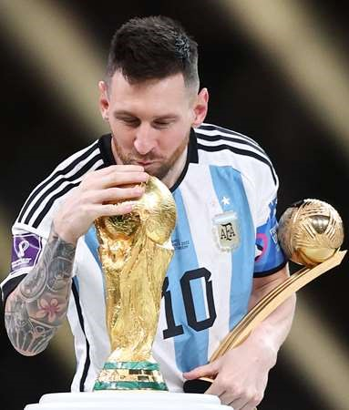

LIONEL MESSI
1987-present
The greatest Football player
Lionel messi is a professional argentine football player who plays as a forward for paris saint german and the argentenian national team he has won numerous awards throughout his career,
including six ballon dor awards, which are given to the best footbal player in the world. he has also won european golden shoe award a record seven times, and is considered one of the
greatest football players of all time. he has spent the majority of his career playing for barcelona, where he won mumerous domestic and international titels, including ten laliga titles and four
ueffa champion league titles.
Biographies
- "Messi The inside Story of the Boy who Became a legend"by Luca Caioli; Transworld Publishers, 2011.
- "Lionel Messi The greatest" by Guillem Balague; Orion Publishing Group, 2016.
- "Messi: The Autography" by lionel Messi, Penguin Books,2018.
- "Messi: The Genuis of football" by luca Caioli, icon books, 2019.
- "Messi: The rise of the world's Greatest Football player" by michael part; Hachette UK, 2020
- "Messi: The Inspirational story of one of football's Greatest Players " by clayton Geoffreys; Createspace Independent Publishimg Platform, 2020.